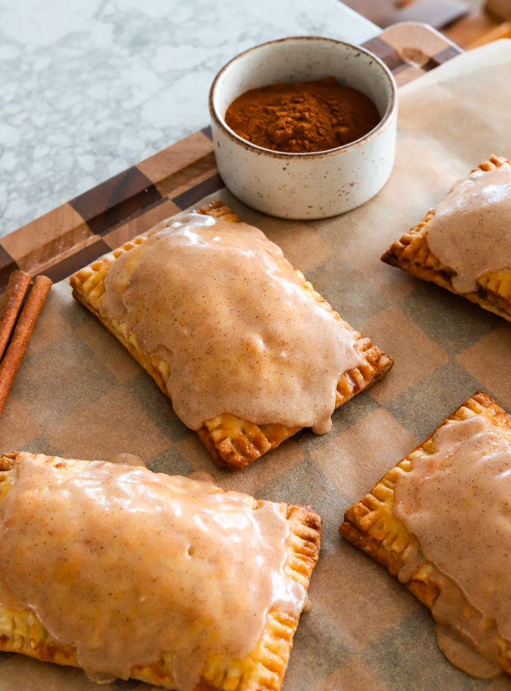
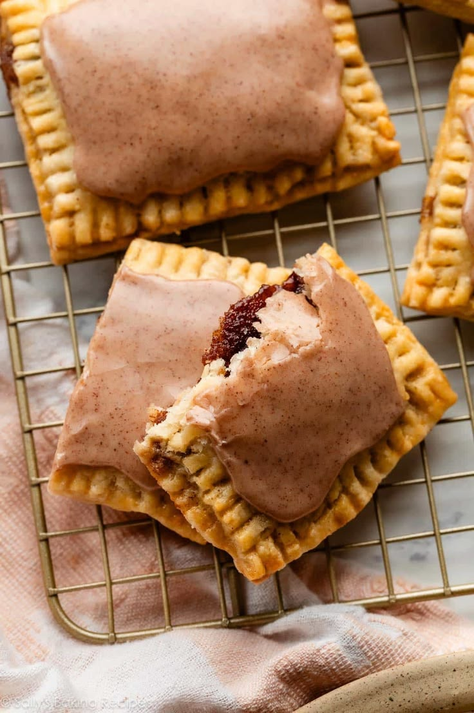

W e e k l y T r e a t


Time Requirements:
- Prep Time: 15 mins
- Cook Time: 20 mins
- Total Time: 35 mins
📋 Ingredients:
- 2 Pie Crusts, you can use store-bought or homemade
- 1/2 cup Pumpkin Butter (I love the Trader Joe's brand!)
- 2 cups Powdered Sugar
- 2 tablespoons Maple Syrup
- 2 tablespoons Milk, more if needed
- 1 teaspoon Cinnamon
👩🍳 Instructions:
- Prep the Oven: Let your oven preheat to 375°F (190°C) and line a baking sheet with parchment paper.
- Fill, Cut, & Bake: Roll out the dough into a rectangle on a floured surface. Use a knife or pizza cutter to cut the dough into four equal pieces. Add 2-3 tablespoons of Pumpkin Butter to the center of the four rectangles (be sure to leave around 1 inch of space on all sides to adhere the top dough to the bottom dough). Roll out your second sheet of pie crust and cut in the same manner. Lay the top layer of pie crust over the crust with the filling. Use a fork to press the edges together. Separate the four rectangles in order to do this on all four sides. Poke holes in the top of the crust. Bake at 375°F (190°C) for 15-20 minutes or until golden brown.
- Create the Maple Icing: While the poptarts are baking, prep the icing. In a small bowl whisk together the powdered sugar, maple syrup, milk, and cinnamon until you have a smooth glaze. Add more milk, as needed, to reach the desired icing consistency.
- Serve or Store: Once the poptarts are done baking, allow them to cool for a few minutes before adding the maple icing. Poptarts can be served immediately or stored in an airtight container for up to 3 days.
You can of course swap out both the filling and the icing for different flavors! This recipe is so easy to adjust, it's a crowd-pleaser any time of the year!
Alternatively:
I'm not a huge fan of traditional poptarts, so I decided to make bitesized versions. Rather than adding the second pie sheet as a top layer, I add filling to all 8 rectangle sections, fold them in half, and use a fork to press the edges together. They are the perfect size if you just want a quick sweet treat!
Watch this quick clip of a similar recipe!